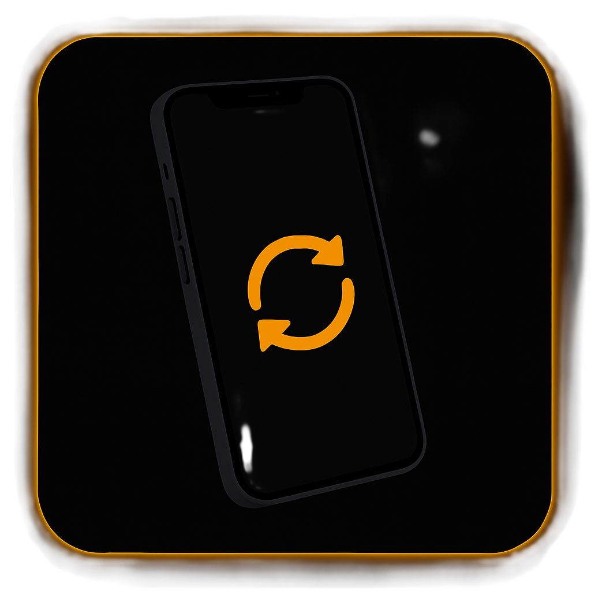
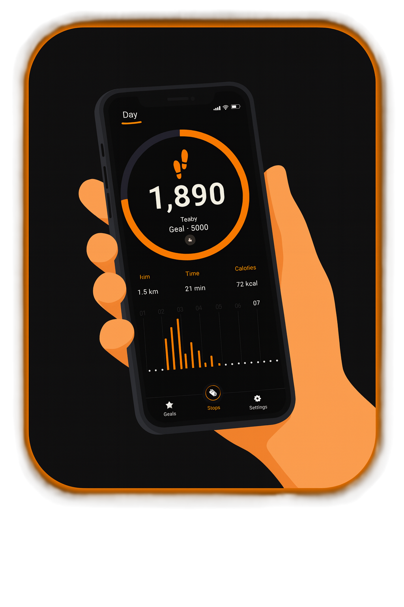
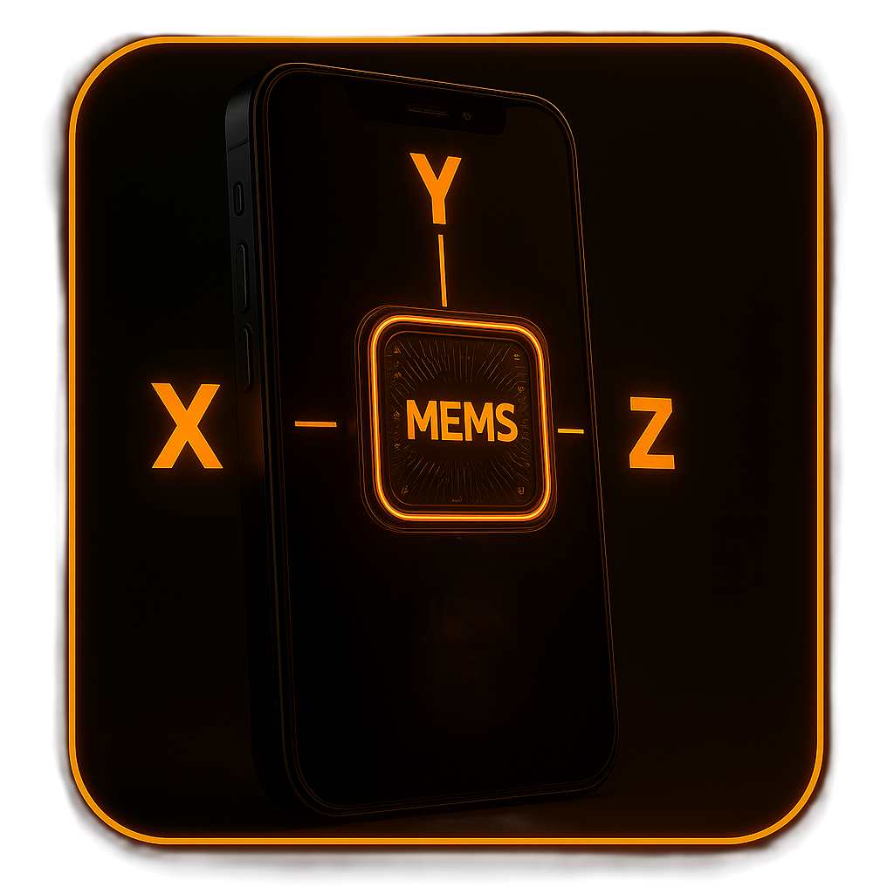
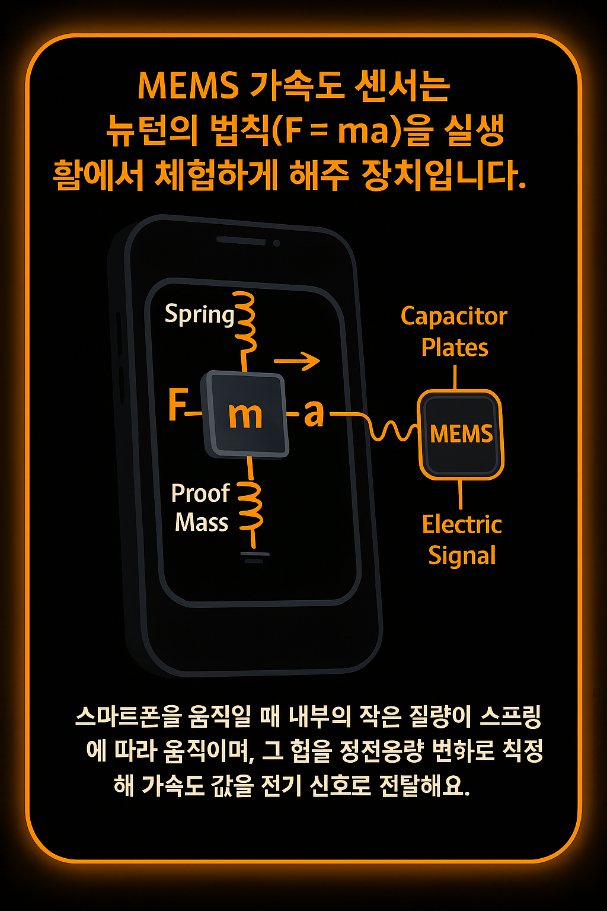

1. 도입
"스마트폰이 내가 움직이는걸 어떻게 알까요?"
화면 자동 회전: 폰을 기울이면 화면이 돌아가고
만보기: 걸음 수를 측정하고
레이싱 게임: 폰을 기울여 자동차를 조종하죠.

이 모든 것은 스마트폰 속의 작은 부품, '가속도 센서' 덕분입니다.
2. 가속도 센서(MEMS)란?
정의 (MEMS): Micro-Electro-Mechanical Systems의 약자로, 마이크로 단위의 전자-기계 시스템을 의미합니다. 스마트폰의 가속도 센서는 바로 이 기술을 사용합니다.
구조: 내부에는 스프링에 매달린 미세한 '질량(Proof Mass)'과 주변에 고정된 '전극'이 있습니다.
원리 (F=ma의 구현): 센서 내부는 '스프링에 매달린 질량' 구조입니다. 스마트폰이 가속되면, 관성에 의해 내부의 작은 질량(Proof Mass)은 뒤처지려 하고 스프링이 이를 저항합니다. 이로 인해 질량이 이동하면서 고정된 전극과의 거리가 변하고, '정전용량(Capacitance)' 차이가 발생합니다. 센서는 이 미세한 정전용량 변화를 전기 신호로 변환하여 F=ma 원리에 따라 최종적인 가속도 값으로 계산해 보여줍니다.
X축: 좌우
Y축: 앞뒤
Z축: 위아래
흥미로운 사실: 자유낙하 시, 모든 축의 가속도는 거의 0이 됩니다. (무중력 상태 체험)
3. 물리학Ⅰ과의 연결
뉴턴 제1법칙 (관성의 법칙): 외부 힘이 없을 때 물체는 상태를 유지하려 합니다. 가속도 센서 속 '질량'은 스마트폰이 움직여도 원래 위치에 머무르려는 관성 때문에 상대적으로 움직이게 됩니다.
뉴턴 제2법칙 (F=ma): 센서는 '질량'의 움직임을 통해 작용하는 힘(F)을 측정하고, 이를 바탕으로 가속도(a)를 계산합니다. 즉, F=ma 법칙을 스마트폰 속에서 그대로 구현하는 것입니다.
역학적 에너지 보존: 자유낙하 실험 시, 높이에 따른 위치에너지(mgh)가 속력에 따른 운동에너지(½mv²)로 변환되는 과정을 센서가 측정한 가속도 데이터 그래프를 통해 직관적으로 확인할 수 있습니다.
4. 간단 시연 실험
참여 모드를 선택하세요:
서버에 연결 중...
5. 생활 속 응용
- 걸음 수를 측정하는 만보기 앱
- 현실 공간에서 즐기는 AR(증강현실) 게임
- 차량의 급정거, 충돌을 감지하는 사고 알림 시스템
- 자율주행 자동차와 로봇의 자세 제어 핵심 센서
6. 결론
가속도 센서 덕분에, 우리 손안의 스마트폰은 '작은 물리학 실험실'이 됩니다.
이를 통해 우리는 교과서 속 물리학 개념을 생활 속에서 직접 데이터를 통해 체험하고 탐구할 수 있습니다.